Chapter 35: The Nervous System¶
Introduction¶
When you’re reading this book, your nervous system is performing several functions simultaneously. The visual system is processing what is seen on the page; the motor system controls the turn of the pages (or click of the mouse); the prefrontal cortex maintains attention. Even fundamental functions, like breathing and regulation of body temperature, are controlled by the nervous system. A nervous system is an organism’s control center: it processes sensory information from outside (and inside) the body and controls all behaviors—from eating to sleeping to finding a mate.
35.1 Neurons and Glial Cells¶
Learning Objectives
By the end of this section, you will be able to do the following:
- List and describe the functions of the structural components of a neuron
- List and describe the four main types of neurons
- Compare the functions of different types of glial cells
Nervous systems throughout the animal kingdom vary in structure and complexity, as illustrated by the variety of animals shown in Figure 35.2. Some organisms, like sea sponges, lack a true nervous system. Others, like jellyfish, lack a true brain and instead have a system of separate but connected nerve cells (neurons) called a “nerve net.” Echinoderms such as sea stars have nerve cells that are bundled into fibers called nerves. Flatworms of the phylum Platyhelminthes have both a central nervous system (CNS), made up of a small “brain” and two nerve cords, and a peripheral nervous system (PNS) containing a system of nerves that extend throughout the body. The insect nervous system is more complex but also fairly decentralized. It contains a brain, ventral nerve cord, and ganglia (clusters of connected neurons). These ganglia can control movements and behaviors without input from the brain. Octopi may have the most complicated of invertebrate nervous systems—they have neurons that are organized in specialized lobes and eyes that are structurally similar to vertebrate species.
![Illustration A shows the nerve net of a hydra, which resembles a fish net surrounding the body. The hydra is plant like, with a trunk and tentacle like extensions at the top of the trunk. Illustration B shows the nervous system of a sea star. A nerve ring is present in the center of the body. Radiating out from this ring into the five arms are radial nerves. Illustration C shows the nervous system of a planarian, or flatworm. The flatworm has centralized ganglia, or brains, around each eye in the anterior end, and two nerve cords that run along the sides of the body. Transverse nerves connect the nerve cords together. Illustration D shows the nervous system of a bee. The central ganglia, or brain, is located in the head. The ventral nerve cord runs along the lower part of the body. Bumps of nerve cell bodies, called peripheral ganglia, occur periodically along the nerve cord. Illustration E shows the nervous system of the octopus, which consists of a large brain located between the two eyes, and nerves that run into the body and arms. Two large ganglia exist in the nerves located in the body. Illustration F shows the nervous system of a human, which consists of a central nervous system composed of the brain and spinal cord, and a peripheral nervous system composed of the nerves running into the rest of the body.](img/figure-35-01-01.webp)
Compared to invertebrates, vertebrate nervous systems are more complex, centralized, and specialized. While there is great diversity among different vertebrate nervous systems, they all share a basic structure: a CNS that contains a brain and spinal cord and a PNS made up of peripheral sensory and motor nerves. One interesting difference between the nervous systems of invertebrates and vertebrates is that the nerve cords of many invertebrates are located ventrally whereas the vertebrate spinal cords are located dorsally. There is debate among evolutionary biologists as to whether these different nervous system plans evolved separately or whether the invertebrate body plan arrangement somehow “flipped” during the evolution of vertebrates.
Interactive
Watch this video of biologist Mark Kirschner discussing the “flipping” phenomenon of vertebrate evolution. vertebrate_evol
The nervous system is made up of neurons, specialized cells that can receive and transmit chemical or electrical signals, and glia, cells that provide support functions for the neurons by playing an information processing role that is complementary to neurons. A neuron can be compared to an electrical wire—it transmits a signal from one place to another. Glia can be compared to the workers at the electric company who make sure wires go to the right places, maintain the wires, and take down wires that are broken. Although glia have been compared to workers, recent evidence suggests that they also usurp some of the signaling functions of neurons.
There is great diversity in the types of neurons and glia that are present in different parts of the nervous system. There are four major types of neurons, and they share several important cellular components.
Neurons¶
The nervous system of the common laboratory fly, Drosophila melanogaster, contains around 100,000 neurons, the same number as a lobster. This number compares to 75 million in the mouse and 300 million in the octopus. A human brain contains around 86 billion neurons. Despite these very different numbers, the nervous systems of these animals control many of the same behaviors—from basic reflexes to more complicated behaviors like finding food and courting mates. The ability of neurons to communicate with each other as well as with other types of cells underlies all of these behaviors.
Most neurons share the same cellular components. But neurons are also highly specialized—different types of neurons have different sizes and shapes that relate to their functional roles.
Parts of a Neuron¶
Like other cells, each neuron has a cell body (or soma) that contains a nucleus, smooth and rough endoplasmic reticulum, Golgi apparatus, mitochondria, and other cellular components. Neurons also contain unique structures, illustrated in Figure 35.3 for receiving and sending the electrical signals that make neuronal communication possible. Dendrites are tree-like structures that extend away from the cell body to receive messages from other neurons at specialized junctions called synapses. Although some neurons do not have any dendrites, some types of neurons have multiple dendrites. Dendrites can have small protrusions called dendritic spines, which further increase surface area for possible synaptic connections.
Once a signal is received by the dendrite, it then travels passively to the cell body. The cell body contains a specialized structure, the axon hillock that integrates signals from multiple synapses and serves as a junction between the cell body and an axon. An axon is a tube-like structure that propagates the integrated signal to specialized endings called axon terminals. These terminals in turn synapse on other neurons, muscle, or target organs. Chemicals released at axon terminals allow signals to be communicated to these other cells. Neurons usually have one or two axons, but some neurons, like amacrine cells in the retina, do not contain any axons. Some axons are covered with myelin, which acts as an insulator to minimize dissipation of the electrical signal as it travels down the axon, greatly increasing the speed of conduction. This insulation is important as the axon from a human motor neuron can be as long as a meter—from the base of the spine to the toes. The myelin sheath is not actually part of the neuron. Myelin is produced by glial cells. Along the axon there are periodic gaps in the myelin sheath. These gaps are called nodes of Ranvier and are sites where the signal is “recharged” as it travels along the axon.
It is important to note that a single neuron does not act alone—neuronal communication depends on the connections that neurons make with one another (as well as with other cells, like muscle cells). Dendrites from a single neuron may receive synaptic contact from many other neurons. For example, dendrites from a Purkinje cell in the cerebellum are thought to receive contact from as many as 200,000 other neurons.
Visual Connection
![Illustration shows a neuron. The main part of the cell body, called the soma, contains the nucleus. Branch-like dendrites project from three sides of the soma. A long, thin axon projects from the fourth side. The axon branches at the end. The tip of the axon is in close proximity to dendrites of an adjacent nerve cell. The narrow space between the axon and dendrites is called the synapse. Cells called oligodendrocytes are located next to the axon. Projections from the oligodendrocytes wrap around the axon, forming a myelin sheath. The myelin sheath is not continuous, and gaps where the axon is exposed are called nodes of Ranvier.](img/figure-35-01-02.webp)
Which of the following statements is false?
- The soma is the cell body of a nerve cell.
- Myelin sheath provides an insulating layer to the dendrites.
- Axons carry the signal from the soma to the target.
- Dendrites carry the signal to the soma.
Types of Neurons¶
There are different types of neurons, and the functional role of a given neuron is intimately dependent on its structure. There is an amazing diversity of neuron shapes and sizes found in different parts of the nervous system (and across species), as illustrated by the neurons shown in Figure 35.4.
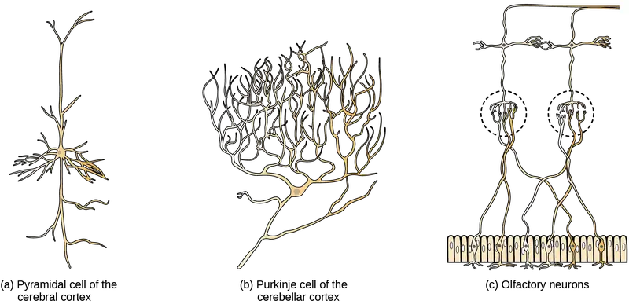
While there are many defined neuron cell subtypes, neurons are broadly divided into four basic types: unipolar, bipolar, multipolar, and pseudounipolar. Figure 35.5 illustrates these four basic neuron types. Unipolar neurons have only one structure that extends away from the soma. These neurons are not found in vertebrates but are found in insects where they stimulate muscles or glands. A bipolar neuron has one axon and one dendrite extending from the soma. An example of a bipolar neuron is a retinal bipolar cell, which receives signals from photoreceptor cells that are sensitive to light and transmits these signals to ganglion cells that carry the signal to the brain. Multipolar neurons are the most common type of neuron. Each multipolar neuron contains one axon and multiple dendrites. Multipolar neurons can be found in the central nervous system (brain and spinal cord). An example of a multipolar neuron is a Purkinje cell in the cerebellum, which has many branching dendrites but only one axon. Pseudounipolar cells share characteristics with both unipolar and bipolar cells. A pseudounipolar cell has a single process that extends from the soma, like a unipolar cell, but this process later branches into two distinct structures, like a bipolar cell. Most sensory neurons are pseudounipolar and have an axon that branches into two extensions: one connected to dendrites that receive sensory information and another that transmits this information to the spinal cord.
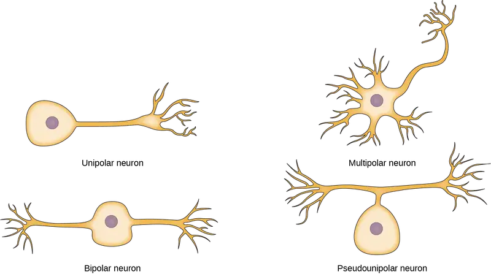
Everyday Connection: Neurogenesis
At one time, scientists believed that people were born with all the neurons they would ever have. Research performed during the last few decades indicates that neurogenesis, the birth of new neurons, continues into adulthood. Neurogenesis was first discovered in songbirds that produce new neurons while learning songs. For mammals, new neurons also play an important role in learning: about 1000 new neurons develop in the hippocampus (a brain structure involved in learning and memory) each day. While most of the new neurons will die, researchers found that an increase in the number of surviving new neurons in the hippocampus correlated with how well rats learned a new task. Interestingly, both exercise and some antidepressant medications also promote neurogenesis in the hippocampus. Stress has the opposite effect. While neurogenesis is quite limited compared to regeneration in other tissues, research in this area may lead to new treatments for disorders such as Alzheimer’s, stroke, and epilepsy.
How do scientists identify new neurons? A researcher can inject a compound called bromodeoxyuridine (BrdU) into the brain of an animal. While all cells will be exposed to BrdU, BrdU will only be incorporated into the DNA of newly generated cells that are in S phase. A technique called immunohistochemistry can be used to attach a fluorescent label to the incorporated BrdU, and a researcher can use fluorescent microscopy to visualize the presence of BrdU, and thus new neurons, in brain tissue. Figure 35.6 is a micrograph which shows fluorescently labeled neurons in the hippocampus of a rat.
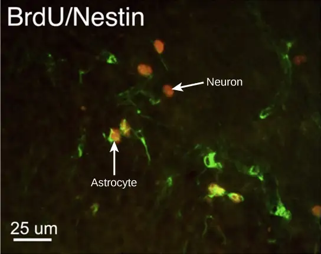
Interactive
This video contains more information about neurogenesis.
Glia¶
While glia are often thought of as the supporting cast of the nervous system, the number of glial cells in the brain actually outnumbers the number of neurons by a factor of ten. Neurons would be unable to function without the vital roles that are fulfilled by these glial cells. Glia guide developing neurons to their destinations, buffer ions and chemicals that would otherwise harm neurons, and provide myelin sheaths around axons. Scientists have recently discovered that they also play a role in responding to nerve activity and modulating communication between nerve cells. When glia do not function properly, the result can be disastrous—most brain tumors are caused by mutations in glia.
Types of Glia¶
There are several different types of glia with different functions, two of which are shown in Figure 35.7. Astrocytes, shown in Figure 35.8a make contact with both capillaries and neurons in the CNS. They provide nutrients and other substances to neurons, regulate the concentrations of ions and chemicals in the extracellular fluid, and provide structural support for synapses. Astrocytes also form the blood-brain barrier—a structure that blocks entrance of toxic substances into the brain. Astrocytes, in particular, have been shown through calcium imaging experiments to become active in response to nerve activity, transmit calcium waves between astrocytes, and modulate the activity of surrounding synapses. Satellite glia provide nutrients and structural support for neurons in the PNS. Microglia scavenge and degrade dead cells and protect the brain from invading microorganisms. Oligodendrocytes, shown in Figure 35.8b form myelin sheaths around axons in the CNS. One axon can be myelinated by several oligodendrocytes, and one oligodendrocyte can provide myelin for multiple neurons. This is distinctive from the PNS where a single Schwann cell provides myelin for only one axon as the entire Schwann cell surrounds the axon. Radial glia serve as scaffolds for developing neurons as they migrate to their end destinations. Ependymal cells line fluid-filled ventricles of the brain and the central canal of the spinal cord. They are involved in the production of cerebrospinal fluid, which serves as a cushion for the brain, moves the fluid between the spinal cord and the brain, and is a component for the choroid plexus.
![Illustration A shows various types of glial cells surrounding a multipolar nerve of the central nervous system. Oligodendrocytes have an oval body and protrusions that wrap around the axon. Astrocytes are round and slightly larger than neurons, with many extensions projecting outward to neurons and other cells. Microglia are small and rectangular, with many fine projections. Ependymal cells have small, round bodies lined up in a row. Long extensions connect from the ependymal cells to an astrocyte. Illustration B shows a pseudounipolar cell of the peripheral nervous system. Schwann cells wrap around the branched axon, and satellite cells surround the neuron cell body.](img/figure-35-01-06.webp)
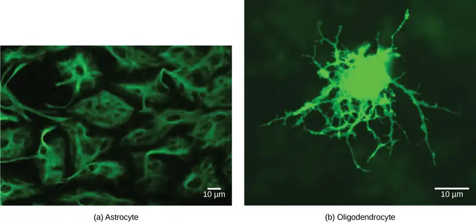
35.2 How Neurons Communicate¶
Learning Objectives
By the end of this section, you will be able to do the following:
- Describe the basis of the resting membrane potential
- Explain the stages of an action potential and how action potentials are propagated
- Explain the similarities and differences between chemical and electrical synapses
- Describe long-term potentiation and long-term depression
All functions performed by the nervous system—from a simple motor reflex to more advanced functions like making a memory or a decision—require neurons to communicate with one another. While humans use words and body language to communicate, neurons use electrical and chemical signals. Just like a person in a committee, one neuron usually receives and synthesizes messages from multiple other neurons before “making the decision” to send the message on to other neurons.
Nerve Impulse Transmission within a Neuron¶
For the nervous system to function, neurons must be able to send and receive signals. These signals are possible because each neuron has a charged cellular membrane (a voltage difference between the inside and the outside), and the charge of this membrane can change in response to neurotransmitter molecules released from other neurons and environmental stimuli. To understand how neurons communicate, one must first understand the basis of the baseline or ‘resting’ membrane charge.
Neuronal Charged Membranes¶
The lipid bilayer membrane that surrounds a neuron is impermeable to charged molecules or ions. To enter or exit the neuron, ions must pass through special proteins called ion channels that span the membrane. Ion channels have different configurations: open, closed, and inactive, as illustrated in Figure 35.9. Some ion channels need to be activated in order to open and allow ions to pass into or out of the cell. These ion channels are sensitive to the environment and can change their shape accordingly. Ion channels that change their structure in response to voltage changes are called voltage-gated ion channels. Voltage-gated ion channels regulate the relative concentrations of different ions inside and outside the cell. The difference in total charge between the inside and outside of the cell is called the membrane potential.
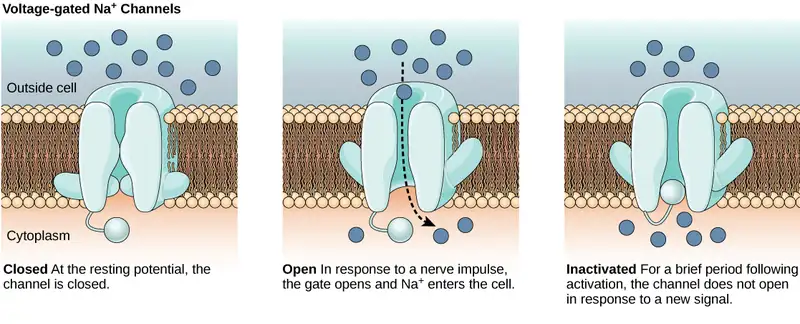
Interactive
This video discusses the basis of the resting membrane potential. resting_neuron
Resting Membrane Potential¶
A neuron at rest is negatively charged: the inside of a cell is approximately 70 millivolts more negative than the outside (−70 mV, note that this number varies by neuron type and by species). This voltage is called the resting membrane potential; it is caused by differences in the concentrations of ions inside and outside the cell. If the membrane were equally permeable to all ions, each type of ion would flow across the membrane and the system would reach equilibrium. Because ions cannot simply cross the membrane at will, there are different concentrations of several ions inside and outside the cell, as shown in Table 35.1. The difference in the number of positively charged potassium ions (K+) inside and outside the cell dominates the resting membrane potential (Figure 35.10). When the membrane is at rest, K+ ions accumulate inside the cell due to the activity of the Na/K pump, driving both ions against their concentration gradient. The negative resting membrane potential is created and maintained by increasing the concentration of cations outside the cell (in the extracellular fluid) relative to inside the cell (in the cytoplasm). The negative charge within the cell is created by the cell membrane being more permeable to potassium ion movement than sodium ion movement. In neurons, potassium ions are maintained at high concentrations within the cell while sodium ions are maintained at high concentrations outside of the cell. The cell possesses potassium and sodium leakage channels that allow the two cations to diffuse down their concentration gradient. However, the neurons have far more potassium leakage channels than sodium leakage channels. Therefore, potassium diffuses out of the cell at a much faster rate than sodium leaks in. Because more cations are leaving the cell than are entering, this causes the interior of the cell to be negatively charged relative to the outside of the cell. The actions of the sodium potassium pump help to maintain the resting potential, once established. Recall that sodium potassium pumps brings two K+ ions into the cell while removing three Na+ ions per ATP consumed. As more cations are expelled from the cell than taken in, the inside of the cell remains negatively charged relative to the extracellular fluid. It should be noted that chloride ions (Cl–) tend to accumulate outside of the cell because they are repelled by negatively-charged proteins within the cytoplasm.
Table 35.1 The resting membrane potential is a result of different concentrations inside and outside the cell.
| Ion Concentration Inside and Outside Neurons | |||
|---|---|---|---|
| Ion | Extracellular concentration (mM) | Intracellular concentration (mM) | Ratio outside/inside |
| Na+ | 145 | 12 | 12 |
| K+ | 4 | 155 | 0.026 |
| Cl− | 120 | 4 | 30 |
| Organic anions (A−) | — | 100 | |
![The resting membrane potential of minus seventy volts is maintained by a sodium/potassium transporter that transports sodium ions out of the cell and potassium ions in. Voltage gated sodium and potassium channels are closed. In response to a nerve impulse, some sodium channels open, allowing sodium ions to enter the cell. The membrane starts to depolarize; in other words, the charge across the membrane lessens. If the membrane potential increases to the threshold of excitation, all the sodium channels open. At the peak action potential, potassium channels open and potassium ions leave the cell. The membrane eventually becomes hyperpolarized.](img/figure-35-02-02.webp)
Action Potential¶
A neuron can receive input from other neurons and, if this input is strong enough, send the signal to downstream neurons. Transmission of a signal between neurons is generally carried by a chemical called a neurotransmitter. Transmission of a signal within a neuron (from dendrite to axon terminal) is carried by a brief reversal of the resting membrane potential called an action potential. When neurotransmitter molecules bind to receptors located on a neuron’s dendrites, ion channels open. At excitatory synapses, this opening allows positive ions to enter the neuron and results in depolarization of the membrane—a decrease in the difference in voltage between the inside and outside of the neuron. A stimulus from a sensory cell or another neuron depolarizes the target neuron to its threshold potential (-55 mV). Na+ channels in the axon hillock open, allowing positive ions to enter the cell (Figure 35.10 and Figure 35.11). Once the sodium channels open, the neuron completely depolarizes to a membrane potential of about +40 mV. Action potentials are considered an "all-or nothing" event, in that, once the threshold potential is reached, the neuron always completely depolarizes. Once depolarization is complete, the cell must now "reset" its membrane voltage back to the resting potential. To accomplish this, the Na+ channels close and cannot be opened. This begins the neuron's refractory period, in which it cannot produce another action potential because its sodium channels will not open. At the same time, voltage-gated K+ channels open, allowing K+ to leave the cell. As K+ ions leave the cell, the membrane potential once again becomes negative and repolarizes. The diffusion of K+ out of the cell actually continues for a short period of time past the time of the achievement of the resting potential, and the membrane hyperpolarizes, in that the membrane potential becomes more negative than the cell's normal resting potential. This is the result of the slow closing of the K+ channels. At this point, the sodium channels will return to their resting state, meaning they are ready to open again if the membrane potential again exceeds the threshold potential. Eventually all the K+ channels close, and the cell returns back to its resting membrane potential.
Visual Connection
![Graph plots membrane potential in millivolts versus time. The membrane remains at the resting potential of negative 70 millivolts until a nerve impulse occurs in step 1. Some sodium channels open, and the potential begins to rapidly climb past the threshold of excitation of negative 55 millivolts, at which point all the sodium channels open. At the peak action potential, the potential begins to rapidly drop as potassium channels open and sodium channels close. As a result, the membrane repolarizes past the resting membrane potential and becomes hyperpolarized. The membrane potential then gradually returns to normal.](img/figure-35-02-03.webp)
Potassium channel blockers, such as amiodarone and procainamide, which are used to treat abnormal electrical activity in the heart, called cardiac dysrhythmia, impede the movement of K+ through voltage-gated K+ channels. Which part of the action potential would you expect potassium channels to affect?
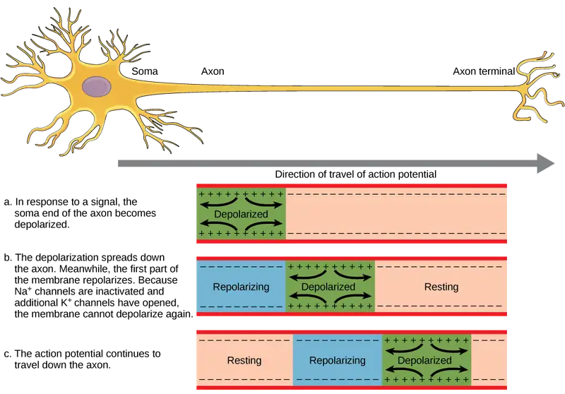
Interactive
This video presents an overview of action potential.
Myelin and the Propagation of the Action Potential¶
For an action potential to communicate information to another neuron, it must travel along the axon and reach the axon terminals where it can initiate neurotransmitter release. The speed of conduction of an action potential along an axon is influenced by both the diameter of the axon and the axon’s resistance to current leak. Myelin acts as an insulator that prevents current from leaving the axon; this increases the speed of action potential conduction. In demyelinating diseases like multiple sclerosis, action potential conduction slows because current leaks from previously insulated axon areas. The nodes of Ranvier, illustrated in Figure 35.13 are gaps in the myelin sheath along the axon. These unmyelinated spaces are about one micrometer long and contain voltage-gated Na+ and K+ channels. Flow of ions through these channels, particularly the Na+ channels, regenerates the action potential over and over again along the axon. This ‘jumping’ of the action potential from one node to the next is called saltatory conduction. If nodes of Ranvier were not present along an axon, the action potential would propagate very slowly since Na+ and K+ channels would have to continuously regenerate action potentials at every point along the axon instead of at specific points. Nodes of Ranvier also save energy for the neuron since the channels only need to be present at the nodes and not along the entire axon.
![Illustration shows an axon covered in three bands of myelin sheath. Between the sheath coverings the axon is exposed. The uncovered parts of the axon are called nodes of Ranvier. In the illustration, the left node of Ranvier is depolarized such that the membrane potential is positive inside and negative outside. The right membrane of the right node is at the resting potential, negative inside and positive outside. An arrow indicates that the depolarization jumps from the left node to the right, so that the right node becomes depolarized.](img/figure-35-02-05.webp)
Synaptic Transmission¶
The synapse or “gap” is the place where information is transmitted from one neuron to another. Synapses usually form between axon terminals and dendritic spines, but this is not universally true. There are also axon-to-axon, dendrite-to-dendrite, and axon-to-cell body synapses. The neuron transmitting the signal is called the presynaptic neuron, and the neuron receiving the signal is called the postsynaptic neuron. Note that these designations are relative to a particular synapse—most neurons are both presynaptic and postsynaptic. There are two types of synapses: chemical and electrical.
Chemical Synapse¶
When an action potential reaches the axon terminal it depolarizes the membrane and opens voltage-gated Na+ channels. Na+ ions enter the cell, further depolarizing the presynaptic membrane. This depolarization causes voltage-gated Ca2+ channels to open. Calcium ions entering the cell initiate a signaling cascade that causes small membrane-bound vesicles, called synaptic vesicles, containing neurotransmitter molecules to fuse with the presynaptic membrane. Synaptic vesicles are shown in Figure 35.14, which is an image from a scanning electron microscope.
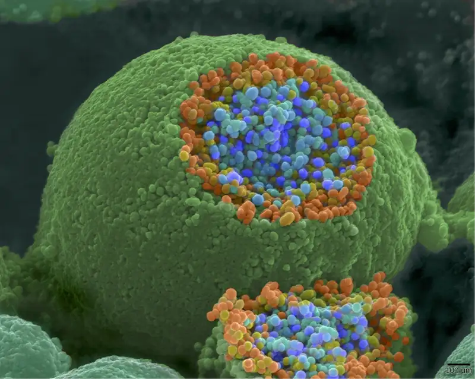
Fusion of a vesicle with the presynaptic membrane causes neurotransmitter to be released into the synaptic cleft, the extracellular space between the presynaptic and postsynaptic membranes, as illustrated in Figure 35.15. The neurotransmitter diffuses across the synaptic cleft and binds to receptor proteins on the postsynaptic membrane.
![Illustration shows a narrow axon of a presynaptic cell widening into a bulb-like axon terminal. A narrow synaptic cleft separates the axon terminal of the presynaptic cell from the postsynaptic cell. In step 1, an action potential arrives at the axon terminal. In step 2, the action potential causes voltage-gated calcium channels in the axon terminal to open, allowing calcium to enter. In step 3, calcium influx causes neurotransmitter-containing synaptic vesicles to fuse with the plasma membrane. Contents of the vesicles are released into the synaptic cleft by exocytosis. In step 4, neurotransmitter diffuses across the synaptic cleft and binds ligand-gated ion channels on the postsynaptic membrane, causing the channels to open. In step 5, the open channels cause ion movement into or out of the cell, resulting in a localized change in membrane potential. In step 6, reuptake by the presynaptic neuron, enzymatic degradation and diffusion reduce neurotransmitter levels, terminating the signal.](img/figure-35-02-07.webp)
The binding of a specific neurotransmitter causes particular ion channels, in this case ligand-gated channels, on the postsynaptic membrane to open. Neurotransmitters can either have excitatory or inhibitory effects on the postsynaptic membrane. For example, when acetylcholine is released at the synapse between a nerve and muscle (called the neuromuscular junction) by a presynaptic neuron, it causes postsynaptic Na+ channels to open. Na+ enters the postsynaptic cell and causes the postsynaptic membrane to depolarize. This depolarization is called an excitatory postsynaptic potential (EPSP) and makes the postsynaptic neuron more likely to fire an action potential. Release of neurotransmitter at inhibitory synapses causes inhibitory postsynaptic potentials (IPSPs), a hyperpolarization of the presynaptic membrane. For example, when the neurotransmitter GABA (gamma-aminobutyric acid) is released from a presynaptic neuron, it binds to and opens Cl- channels. Cl- ions enter the cell and hyperpolarizes the membrane, making the neuron less likely to fire an action potential.
Once neurotransmission has occurred, the neurotransmitter must be removed from the synaptic cleft so the postsynaptic membrane can “reset” and be ready to receive another signal. This can be accomplished in three ways: the neurotransmitter can diffuse away from the synaptic cleft, it can be degraded by enzymes in the synaptic cleft, or it can be recycled (sometimes called reuptake) by the presynaptic neuron. Several drugs act at this step of neurotransmission. For example, some drugs that are given to Alzheimer’s patients work by inhibiting acetylcholinesterase, the enzyme that degrades acetylcholine. This inhibition of the enzyme essentially increases neurotransmission at synapses that release acetylcholine. Once released, the acetylcholine stays in the cleft and can continually bind and unbind to postsynaptic receptors.
Table 35.2
| Neurotransmitter Function and Location | ||
|---|---|---|
| Neurotransmitter | Example | Location |
| Acetylcholine | — | CNS and/or PNS |
| Biogenic amine | Dopamine, serotonin, norepinephrine | CNS and/or PNS |
| Amino acid | Glycine, glutamate, aspartate, gamma aminobutyric acid | CNS |
| Neuropeptide | Substance P, endorphins | CNS and/or PNS |
Electrical Synapse¶
While electrical synapses are fewer in number than chemical synapses, they are found in all nervous systems and play important and unique roles. The mode of neurotransmission in electrical synapses is quite different from that in chemical synapses. In an electrical synapse, the presynaptic and postsynaptic membranes are very close together and are actually physically connected by channel proteins forming gap junctions. Gap junctions allow current to pass directly from one cell to the next. In addition to the ions that carry this current, other molecules, such as ATP, can diffuse through the large gap junction pores.
There are key differences between chemical and electrical synapses. Because chemical synapses depend on the release of neurotransmitter molecules from synaptic vesicles to pass on their signal, there is an approximately one millisecond delay between when the axon potential reaches the presynaptic terminal and when the neurotransmitter leads to opening of postsynaptic ion channels. Additionally, this signaling is unidirectional. Signaling in electrical synapses, in contrast, is virtually instantaneous (which is important for synapses involved in key reflexes), and some electrical synapses are bidirectional. Electrical synapses are also more reliable as they are less likely to be blocked, and they are important for synchronizing the electrical activity of a group of neurons. For example, electrical synapses in the thalamus are thought to regulate slow-wave sleep, and disruption of these synapses can cause seizures.
Signal Summation¶
Sometimes a single EPSP is strong enough to induce an action potential in the postsynaptic neuron, but often multiple presynaptic inputs must create EPSPs around the same time for the postsynaptic neuron to be sufficiently depolarized to fire an action potential. This process is called summation and occurs at the axon hillock, as illustrated in Figure 35.16. Additionally, one neuron often has inputs from many presynaptic neurons—some excitatory and some inhibitory—so IPSPs can cancel out EPSPs and vice versa. It is the net change in postsynaptic membrane voltage that determines whether the postsynaptic cell has reached its threshold of excitation needed to fire an action potential. Together, synaptic summation and the threshold for excitation act as a filter so that random “noise” in the system is not transmitted as important information.
![Illustration shows the location of the axon hillock, which is the area connecting the neuron body to the axon. A graph shows the summation of membrane potentials at the axon hillock, plotted as membrane potential in millivolts versus time. Initially, the membrane potential at the axon hillock is minus 70 millivolts. A series of E P S Ps and I P S Ps cause the potential to rise and fall. Eventually, the potential increases to the threshold of excitation. At this point the nerve fires, resulting in a sharp increase in membrane potential, followed by a rapid decrease. The hillock becomes hyperpolarized such that the membrane potential is lower than the resting potential. The hillock then gradually returns to the resting potential.](img/figure-b35-02-07.webp)
Everyday Connection: Brain-computer interface
Amyotrophic lateral sclerosis (ALS, also called Lou Gehrig’s Disease) is a neurological disease characterized by the degeneration of the motor neurons that control voluntary movements. The disease begins with muscle weakening and lack of coordination and eventually destroys the neurons that control speech, breathing, and swallowing; in the end, the disease can lead to paralysis. At that point, patients require assistance from machines to be able to breathe and to communicate. Several special technologies have been developed to allow “locked-in” patients to communicate with the rest of the world. One technology, for example, allows patients to type out sentences by twitching their cheek. These sentences can then be read aloud by a computer.
A relatively new line of research for helping paralyzed patients, including those with ALS, to communicate and retain a degree of self-sufficiency is called brain-computer interface (BCI) technology and is illustrated in Figure 35.17. This technology sounds like something out of science fiction: it allows paralyzed patients to control a computer using only their thoughts. There are several forms of BCI. Some forms use EEG recordings from electrodes taped onto the skull. These recordings contain information from large populations of neurons that can be decoded by a computer. Other forms of BCI require the implantation of an array of electrodes smaller than a postage stamp in the arm and hand area of the motor cortex. This form of BCI, while more invasive, is very powerful as each electrode can record actual action potentials from one or more neurons. These signals are then sent to a computer, which has been trained to decode the signal and feed it to a tool—such as a cursor on a computer screen. This means that a patient with ALS can use e-mail, read the Internet, and communicate with others by thinking of moving their hand or arm (even though the paralyzed patient cannot make that bodily movement). Recent advances have allowed a paralyzed locked-in patient who suffered a stroke 15 years ago to control a robotic arm and even to feed herself coffee using BCI technology.
Despite the amazing advancements in BCI technology, it also has limitations. The technology can require many hours of training and long periods of intense concentration for the patient; it can also require brain surgery to implant the devices.
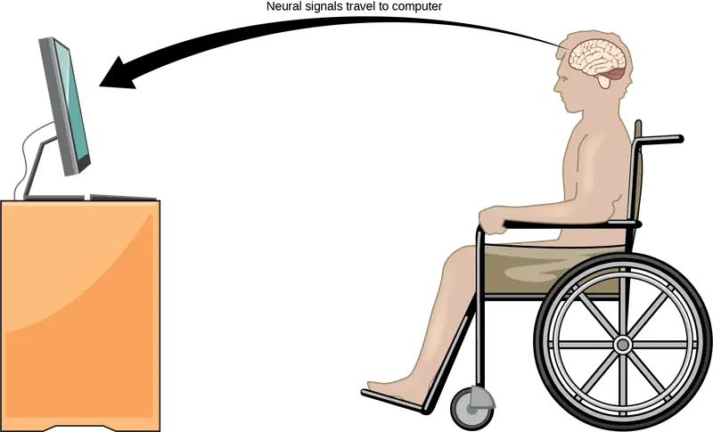
Interactive
Watch this video in which a paralyzed woman uses a brain-controlled robotic arm to bring a drink to her mouth, among other images of brain-computer interface technology in action. paralyzation
Synaptic Plasticity¶
Synapses are not static structures. They can be weakened or strengthened. They can be broken, and new synapses can be made. Synaptic plasticity allows for these changes, which are all needed for a functioning nervous system. In fact, synaptic plasticity is the basis of learning and memory. Two processes in particular, long-term potentiation (LTP) and long-term depression (LTD) are important forms of synaptic plasticity that occur in synapses in the hippocampus, a brain region that is involved in storing memories.
Long-term Potentiation (LTP)¶
Long-term potentiation (LTP) is a persistent strengthening of a synaptic connection. LTP is based on the Hebbian principle: cells that fire together wire together. There are various mechanisms, none fully understood, behind the synaptic strengthening seen with LTP. One known mechanism involves a type of postsynaptic glutamate receptor, called NMDA (N-Methyl-D-aspartate) receptors, shown in Figure 35.18. These receptors are normally blocked by magnesium ions; however, when the postsynaptic neuron is depolarized by multiple presynaptic inputs in quick succession (either from one neuron or multiple neurons), the magnesium ions are forced out allowing Ca2+ ions to pass into the postsynaptic cell. Next, Ca2+ ions entering the cell initiate a signaling cascade that causes a different type of glutamate receptor, called AMPA (α-amino-3-hydroxy-5-methyl-4-isoxazolepropionic acid) receptors, to be inserted into the postsynaptic membrane, since activated AMPA receptors allow positive ions to enter the cell. So, the next time glutamate is released from the presynaptic membrane, it will have a larger excitatory effect (EPSP) on the postsynaptic cell because the binding of glutamate to these AMPA receptors will allow more positive ions into the cell. The insertion of additional AMPA receptors strengthens the synapse and means that the postsynaptic neuron is more likely to fire in response to presynaptic neurotransmitter release. Some drugs of abuse co-opt the LTP pathway, and this synaptic strengthening can lead to addiction.
Long-term Depression (LTD)¶
Long-term depression (LTD) is essentially the reverse of LTP: it is a long-term weakening of a synaptic connection. One mechanism known to cause LTD also involves AMPA receptors. In this situation, calcium that enters through NMDA receptors initiates a different signaling cascade, which results in the removal of AMPA receptors from the postsynaptic membrane, as illustrated in Figure 35.18. The decrease in AMPA receptors in the membrane makes the postsynaptic neuron less responsive to glutamate released from the presynaptic neuron. While it may seem counterintuitive, LTD may be just as important for learning and memory as LTP. The weakening and pruning of unused synapses allows for unimportant connections to be lost and makes the synapses that have undergone LTP that much stronger by comparison.
![Illustration shows the mechanism of L T P and L T D. Normally, the N M D A receptor in the postsynaptic neuron is activated by glutamate binding, but only after depolarization removes an inhibitory magnesium ion. Once the magnesium is removed, calcium can enter the cell. In response to an increase in intracellular calcium, A M P A receptors are inserted into the plasma membrane, which amplifies the signal resulting in L T P. L D P occurs when low-frequency stimulation results in the activation of a different calcium-signaling cascade that causes A M P A receptors to be removed from the plasma membrane. As a result, the nerve cell becomes less responsive to glutamate.](img/figure-35-02-10.webp)
35.3 The Central Nervous System¶
Learning Objectives
By the end of this section, you will be able to do the following:
- Identify the spinal cord, cerebral lobes, and other brain areas on a diagram of the brain
- Describe the basic functions of the spinal cord, cerebral lobes, and other brain areas
The central nervous system (CNS) is made up of the brain, a part of which is shown in Figure 35.19 and spinal cord and is covered with three layers of protective coverings called meninges (from the Greek word for membrane). The outermost layer is the dura mater (Latin for “hard mother”). As the Latin suggests, the primary function for this thick layer is to protect the brain and spinal cord. The dura mater also contains vein-like structures that carry blood from the brain back to the heart. The middle layer is the web-like arachnoid mater. The last layer is the pia mater (Latin for “soft mother”), which directly contacts and covers the brain and spinal cord like plastic wrap. The space between the arachnoid and pia maters is filled with cerebrospinal fluid (CSF). CSF is produced by a tissue called choroid plexus in fluid-filled compartments in the CNS called ventricles. The brain floats in CSF, which acts as a cushion and shock absorber and makes the brain neutrally buoyant. CSF also functions to circulate chemical substances throughout the brain and into the spinal cord.
The entire brain contains only about 8.5 tablespoons of CSF, but CSF is constantly produced in the ventricles. This creates a problem when a ventricle is blocked—the CSF builds up and creates swelling and the brain is pushed against the skull. This swelling condition is called hydrocephalus (“water head”) and can cause seizures, cognitive problems, and even death if a shunt is not inserted to remove the fluid and pressure.
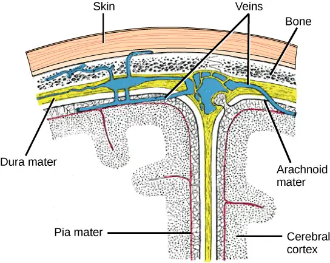
Brain¶
The brain is the part of the central nervous system that is contained in the cranial cavity of the skull. It includes the cerebral cortex, limbic system, basal ganglia, thalamus, hypothalamus, and cerebellum. There are three different ways that a brain can be sectioned in order to view internal structures: a sagittal section cuts the brain left to right, as shown in Figure 35.21b, a coronal section cuts the brain front to back, as shown in Figure 35.20a, and a horizontal section cuts the brain top to bottom.
Cerebral Cortex¶
The outermost part of the brain is a thick piece of nervous system tissue called the cerebral cortex, which is folded into hills called gyri (singular: gyrus) and valleys called sulci (singular: sulcus). The cortex is made up of two hemispheres—right and left—which are separated by a large sulcus. A thick fiber bundle called the corpus callosum (Latin: “tough body”) connects the two hemispheres and allows information to be passed from one side to the other. Although there are some brain functions that are localized more to one hemisphere than the other, the functions of the two hemispheres are largely redundant. In fact, sometimes (very rarely) an entire hemisphere is removed to treat severe epilepsy. While patients do suffer some deficits following the surgery, they can have surprisingly few problems, especially when the surgery is performed on children who have very immature nervous systems.
![Illustration shows coronal (front) and sagittal (side) sections of a human brain. In the coronal section, the large upper part of the brain, called the cerebral cortex, is divided into left and right hemispheres. A cavity resembling butterfly wings exists between the left and right cortex. The corpus callosum is a band that connects the two hemispheres together, just above this cavity. The surface of the cerebral cortex contains bumpy protrusions called gyri. The cerebral cortex is anchored by the brain stem, which connects with the spinal cord. On either side of the brainstem tucked beneath the cerebral cortex is the cerebellum. The surface of the cerebellum is bumpy, but not as bumpy as the cerebral cortex. The sagittal section reveals that the cerebral cortex makes up the front and top part of the brain, while the brainstem and cerebellum make up the lower back part. The oval thalamus sits in the cavity in the middle of the cerebral cortex. The corpus callosum wraps around the top part of the thalamus. The basal ganglia wraps around the corpus callosum, starting at the lower front part of the brain and continuing three-quarters of the way around so the back end almost meets the front end. The basal ganglia is separated into segments that are connected along the top and bottom. The amygdala is a spherical structure at the end of the basal ganglia.](img/figure-35-03-02-ddf8.webp)
In other surgeries to treat severe epilepsy, the corpus callosum is cut instead of removing an entire hemisphere. This causes a condition called split-brain, which gives insights into unique functions of the two hemispheres. For example, when an object is presented to patients’ left visual field, they may be unable to verbally name the object (and may claim to not have seen an object at all). This is because the visual input from the left visual field crosses and enters the right hemisphere and cannot then signal to the speech center, which generally is found in the left side of the brain. Remarkably, if a split-brain patient is asked to pick up a specific object out of a group of objects with the left hand, the patient will be able to do so but will still be unable to vocally identify it.
Interactive
View this video to learn more about split-brain patients.
Each cortical hemisphere contains regions called lobes that are involved in different functions. Scientists use various techniques to determine what brain areas are involved in different functions: they examine patients who have had injuries or diseases that affect specific areas and see how those areas are related to functional deficits. They also conduct animal studies where they stimulate brain areas and see if there are any behavioral changes. They use a technique called transcranial magnetic stimulation (TMS) to temporarily deactivate specific parts of the cortex using strong magnets placed outside the head; and they use functional magnetic resonance imaging (fMRI) to look at changes in oxygenated blood flow in particular brain regions that correlate with specific behavioral tasks. These techniques, and others, have given great insight into the functions of different brain regions but have also showed that any given brain area can be involved in more than one behavior or process, and any given behavior or process generally involves neurons in multiple brain areas. That being said, each hemisphere of the mammalian cerebral cortex can be broken down into four functionally and spatially defined lobes: frontal, parietal, temporal, and occipital. Figure 35.21 illustrates these four lobes of the human cerebral cortex.
![Sagittal, or side view of the human brain shows the different lobes of the cerebral cortex. The frontal lobe is at the front center of the brain. The parietal lobe is at the top back part of the brain. The occipital lobe is at the back of the brain, and the temporal lobe is at the bottom center of the brain. The motor cortex is the back of the frontal lobe, and the olfactory bulb is the bottom part. The somatosensory cortex is the front part of the parietal lobe. The brainstem is beneath the temporal lobe, and the cerebellum is beneath the occipital lobe.](img/figure-35-03-03.webp)
The frontal lobe is located at the front of the brain, over the eyes. This lobe contains the olfactory bulb, which processes smells. The frontal lobe also contains the motor cortex, which is important for planning and implementing movement. Areas within the motor cortex map to different muscle groups, and there is some organization to this map, as shown in Figure 35.22. For example, the neurons that control movement of the fingers are next to the neurons that control movement of the hand. Neurons in the frontal lobe also control cognitive functions like maintaining attention, speech, and decision-making. Studies of humans who have damaged their frontal lobes show that parts of this area are involved in personality, socialization, and assessing risk.
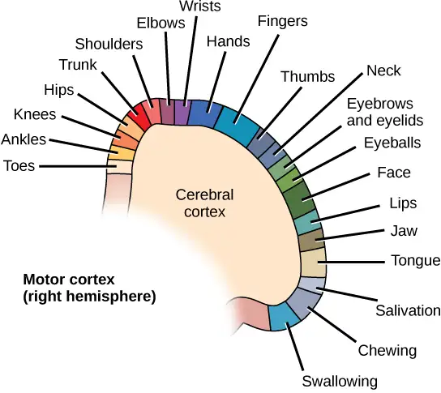
The parietal lobe is located at the top of the brain. Neurons in the parietal lobe are involved in speech and also reading. Two of the parietal lobe’s main functions are processing somatosensation—touch sensations like pressure, pain, heat, cold—and processing proprioception—the sense of how parts of the body are oriented in space. The parietal lobe contains a somatosensory map of the body similar to the motor cortex.
The occipital lobe is located at the back of the brain. It is primarily involved in vision—seeing, recognizing, and identifying the visual world.
The temporal lobe is located at the base of the brain by your ears and is primarily involved in processing and interpreting sounds. It also contains the hippocampus (Greek for “seahorse”)—a structure that processes memory formation. The hippocampus is illustrated in Figure 35.24. The role of the hippocampus in memory was partially determined by studying one famous epileptic patient, HM, who had both sides of his hippocampus removed in an attempt to cure his epilepsy. His seizures went away, but he could no longer form new memories (although he could remember some facts from before his surgery and could learn new motor tasks).
Evolution Connection: Cerebral Cortex
Compared to other vertebrates, mammals have exceptionally large brains for their body size. An entire alligator’s brain, for example, would fill about one and a half teaspoons. This increase in brain to body size ratio is especially pronounced in apes, whales, and dolphins. While this increase in overall brain size doubtlessly played a role in the evolution of complex behaviors unique to mammals, it does not tell the whole story. Scientists have found a relationship between the relatively high surface area of the cortex and the intelligence and complex social behaviors exhibited by some mammals. This increased surface area is due, in part, to increased folding of the cortical sheet (more sulci and gyri). For example, a rat cortex is very smooth with very few sulci and gyri. Cat and sheep cortices have more sulci and gyri. Chimps, humans, and dolphins have even more.
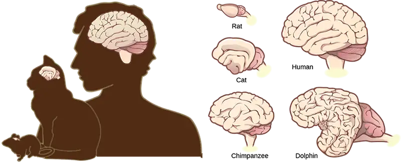
Basal Ganglia¶
Interconnected brain areas called the basal ganglia (or basal nuclei), shown in Figure 35.20b, play important roles in movement control and posture. Damage to the basal ganglia, as in Parkinson’s disease, leads to motor impairments like a shuffling gait when walking. The basal ganglia also regulate motivation. For example, when a wasp sting led to bilateral basal ganglia damage in a 25-year-old businessman, he began to spend all his days in bed and showed no interest in anything or anybody. But when he was externally stimulated—as when someone asked to play a card game with him—he was able to function normally. Interestingly, he and other similar patients do not report feeling bored or frustrated by their state.
Thalamus¶
The thalamus (Greek for “inner chamber”), illustrated in Figure 35.24, acts as a gateway to and from the cortex. It receives sensory and motor inputs from the body and also receives feedback from the cortex. This feedback mechanism can modulate conscious awareness of sensory and motor inputs depending on the attention and arousal state of the animal. The thalamus helps regulate consciousness, arousal, and sleep states. A rare genetic disorder called fatal familial insomnia causes the degeneration of thalamic neurons and glia. This disorder prevents affected patients from being able to sleep, among other symptoms, and is eventually fatal.
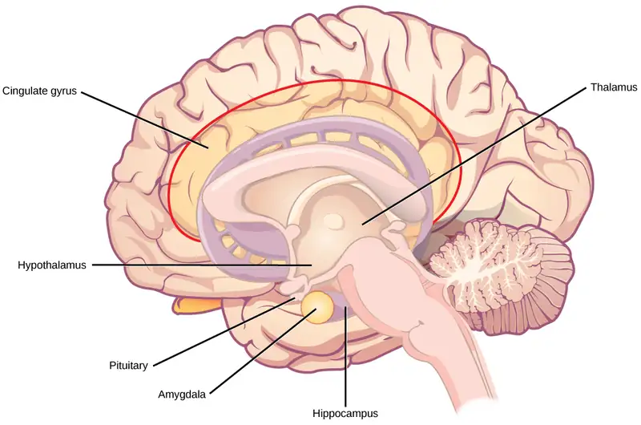
Hypothalamus¶
Below the thalamus is the hypothalamus, shown in Figure 35.24. The hypothalamus controls the endocrine system by sending signals to the pituitary gland, a pea-sized endocrine gland that releases several different hormones that affect other glands as well as other cells. This relationship means that the hypothalamus regulates important behaviors that are controlled by these hormones. The hypothalamus is the body’s thermostat—it makes sure key functions like food and water intake, energy expenditure, and body temperature are kept at appropriate levels. Neurons within the hypothalamus also regulate circadian rhythms, sometimes called sleep cycles.
Limbic System¶
The limbic system is a connected set of structures that regulates emotion, as well as behaviors related to fear and motivation. It plays a role in memory formation and includes parts of the thalamus and hypothalamus as well as the hippocampus. One important structure within the limbic system is a temporal lobe structure called the amygdala (Greek for “almond”), illustrated in Figure 35.24. The two amygdala are important both for the sensation of fear and for recognizing fearful faces. The cingulate gyrus helps regulate emotions and pain.
Cerebellum¶
The cerebellum (Latin for “little brain”), shown in Figure 35.21, sits at the base of the brain on top of the brainstem. The cerebellum controls balance and aids in coordinating movement and learning new motor tasks.
Brainstem¶
The brainstem, illustrated in Figure 35.21, connects the rest of the brain with the spinal cord. It consists of the midbrain, medulla oblongata, and the pons. Motor and sensory neurons extend through the brainstem allowing for the relay of signals between the brain and spinal cord. Ascending neural pathways cross in this section of the brain allowing the left hemisphere of the cerebrum to control the right side of the body and vice versa. The brainstem coordinates motor control signals sent from the brain to the body. The brainstem controls several important functions of the body including alertness, arousal, breathing, blood pressure, digestion, heart rate, swallowing, walking, and sensory and motor information integration.
Spinal Cord¶
Connecting to the brainstem and extending down the body through the spinal column is the spinal cord, shown in Figure 35.21. The spinal cord is a thick bundle of nerve tissue that carries information about the body to the brain and from the brain to the body. The spinal cord is contained within the bones of the vertebrate column but is able to communicate signals to and from the body through its connections with spinal nerves (part of the peripheral nervous system). A cross-section of the spinal cord looks like a white oval containing a gray butterfly-shape, as illustrated in Figure 35.25. Myelinated axons make up the “white matter” and neuron and glial cell bodies make up the “gray matter.” Gray matter is also composed of interneurons, which connect two neurons each located in different parts of the body. Axons and cell bodies in the dorsal (facing the back of the animal) spinal cord convey mostly sensory information from the body to the brain. Axons and cell bodies in the ventral (facing the front of the animal) spinal cord primarily transmit signals controlling movement from the brain to the body.
The spinal cord also controls motor reflexes. These reflexes are quick, unconscious movements—like automatically removing a hand from a hot object. Reflexes are so fast because they involve local synaptic connections. For example, the knee reflex that a doctor tests during a routine physical is controlled by a single synapse between a sensory neuron and a motor neuron. While a reflex may only require the involvement of one or two synapses, synapses with interneurons in the spinal column transmit information to the brain to convey what happened (the knee jerked, or the hand was hot).
In the United States, there around 10,000 spinal cord injuries each year. Because the spinal cord is the information superhighway connecting the brain with the body, damage to the spinal cord can lead to paralysis. The extent of the paralysis depends on the location of the injury along the spinal cord and whether the spinal cord was completely severed. For example, if the spinal cord is damaged at the level of the neck, it can cause paralysis from the neck down, whereas damage to the spinal column further down may limit paralysis to the legs. Spinal cord injuries are notoriously difficult to treat because spinal nerves do not regenerate, although ongoing research suggests that stem cell transplants may be able to act as a bridge to reconnect severed nerves. Researchers are also looking at ways to prevent the inflammation that worsens nerve damage after injury. One such treatment is to pump the body with cold saline to induce hypothermia. This cooling can prevent swelling and other processes that are thought to worsen spinal cord injuries.
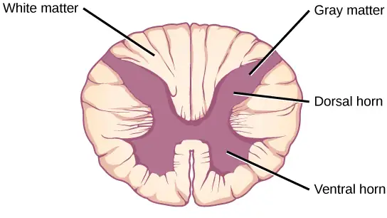
35.4 The Peripheral Nervous System¶
Learning Objectives
By the end of this section, you will be able to do the following:
- Describe the organization and functions of the sympathetic and parasympathetic nervous systems
- Describe the organization and function of the sensory-somatic nervous system
The peripheral nervous system (PNS) is the connection between the central nervous system and the rest of the body. The CNS is like the power plant of the nervous system. It creates the signals that control the functions of the body. The PNS is like the wires that go to individual houses. Without those “wires,” the signals produced by the CNS could not control the body (and the CNS would not be able to receive sensory information from the body either).
The PNS can be broken down into the autonomic nervous system, which controls bodily functions without conscious control, and the sensory-somatic nervous system, which transmits sensory information from the skin, muscles, and sensory organs to the CNS and sends motor commands from the CNS to the muscles.
Autonomic Nervous System¶
Visual Connection
![The autonomic nervous system is divided into sympathetic and parasympathetic systems. In the sympathetic system, the soma of the preganglionic neurons is usually located in the spine while in the parasympathetic system the soma is usually in the brainstem or sacral vertebrae, at the bottom of the spine. In both systems, the preganglionic neuron releases the neurotransmitter acetylcholine into the preganglionic synapse. Postganglionic neurons of the sympathetic system have somas in a sympathetic ganglion, located next to the spinal cord. Postganglionic neurons of the parasympathetic system have somas in ganglions near the target organ. Postganglionic neurons of the sympathetic system release norepinephrine into the postganglionic synapse, causing the fight or flight response to be activated in the target organ, while postganglionic neurons of the parasympathetic system release acetylcholine or nitric oxide into postganglionic synapse, causing the rest and digest response to be activated in the target organ.](img/figure-35-04-01f.webp)
Which of the following statements is false?
- The parasympathetic pathway is responsible for resting the body, while the sympathetic pathway is responsible for preparing for an emergency.
- Most preganglionic neurons in the sympathetic pathway originate in the spinal cord.
- Slowing of the heartbeat is a parasympathetic response.
- Parasympathetic neurons are responsible for releasing norepinephrine on the target organ, while sympathetic neurons are responsible for releasing acetylcholine.
The autonomic nervous system serves as the relay between the CNS and the internal organs. It controls the lungs, the heart, smooth muscle, and exocrine and endocrine glands. The autonomic nervous system controls these organs largely without conscious control; it can continuously monitor the conditions of these different systems and implement changes as needed. Signaling to the target tissue usually involves two synapses: a preganglionic neuron (originating in the CNS) synapses to a neuron in a ganglion that, in turn, synapses on the target organ, as illustrated in Figure 35.26. There are two divisions of the autonomic nervous system that often have opposing effects: the sympathetic nervous system and the parasympathetic nervous system.
Sympathetic Nervous System¶
The sympathetic nervous system is responsible for the “fight or flight” response that occurs when an animal encounters a dangerous situation. One way to remember this is to think of the surprise a person feels when encountering a snake (“snake” and “sympathetic” both begin with “s”). Examples of functions controlled by the sympathetic nervous system include an accelerated heart rate and inhibited digestion. These functions help prepare an organism’s body for the physical strain required to escape a potentially dangerous situation or to fend off a predator.
![Illustration shows the effects of the sympathetic and parasympathetic systems on target organs, and the placement of the preganglionic neurons that mediate these effects. The parasympathetic system causes pupils and bronchi to constrict, slows the heart rate, and stimulates salivation, digestion, and bile secretion. Preganglionic neurons that mediate these effects are all located in the brain stem. Preganglionic neurons of the parasympathetic system that are located in the sacral cause the bladder to contract. The sympathetic system causes pupils and bronchi to dilate, increases heart rate, inhibits digestion, stimulates the breakdown of glycogen and the secretion of adrenaline and noradrenaline, and inhibits contraction of the bladder. The preganglionic neurons that mediate these effects are all located in the spine.](img/figure-b35-04-02.webp)
Most preganglionic neurons in the sympathetic nervous system originate in the spinal cord, as illustrated in Figure 35.27. The axons of these neurons release acetylcholine on postganglionic neurons within sympathetic ganglia (the sympathetic ganglia form a chain that extends alongside the spinal cord). The acetylcholine activates the postganglionic neurons. Postganglionic neurons then release norepinephrine onto target organs. As anyone who has ever felt a rush before a big test, speech, or athletic event can attest, the effects of the sympathetic nervous system are quite pervasive. This is both because one preganglionic neuron synapses on multiple postganglionic neurons, amplifying the effect of the original synapse, and because the adrenal gland also releases norepinephrine (and the closely related hormone epinephrine) into the bloodstream. The physiological effects of this norepinephrine release include dilating the trachea and bronchi (making it easier for the animal to breathe), increasing heart rate, and moving blood from the skin to the heart, muscles, and brain (so the animal can think and run). The strength and speed of the sympathetic response helps an organism avoid danger, and scientists have found evidence that it may also increase LTP—allowing the animal to remember the dangerous situation and avoid it in the future.
Parasympathetic Nervous System¶
While the sympathetic nervous system is activated in stressful situations, the parasympathetic nervous system allows an animal to “rest and digest.” One way to remember this is to think that during a restful situation like a picnic, the parasympathetic nervous system is in control (“picnic” and “parasympathetic” both start with “p”). Parasympathetic preganglionic neurons have cell bodies located in the brainstem and in the sacral (toward the bottom) spinal cord, as shown in Figure 35.27. The axons of the preganglionic neurons release acetylcholine on the postganglionic neurons, which are generally located very near the target organs. Most postganglionic neurons release acetylcholine onto target organs, although some release nitric oxide.
The parasympathetic nervous system resets organ function after the sympathetic nervous system is activated (the common adrenaline dump you feel after a ‘fight-or-flight’ event). Effects of acetylcholine release on target organs include slowing of heart rate, lowered blood pressure, and stimulation of digestion.
Sensory-Somatic Nervous System¶
The sensory-somatic nervous system is made up of cranial and spinal nerves and contains both sensory and motor neurons. Sensory neurons transmit sensory information from the skin, skeletal muscle, and sensory organs to the CNS. Motor neurons transmit messages about desired movement from the CNS to the muscles to make them contract. Without its sensory-somatic nervous system, an animal would be unable to process any information about its environment (what it sees, feels, hears, and so on) and could not control motor movements. Unlike the autonomic nervous system, which has two synapses between the CNS and the target organ, sensory and motor neurons have only one synapse—one ending of the neuron is at the organ and the other directly contacts a CNS neuron. Acetylcholine is the main neurotransmitter released at these synapses.
Humans have 12 cranial nerves, nerves that emerge from or enter the skull (cranium), as opposed to the spinal nerves, which emerge from the vertebral column. Each cranial nerve is accorded a name, which are detailed in Figure 35.28. Some cranial nerves transmit only sensory information. For example, the olfactory nerve transmits information about smells from the nose to the brainstem. Other cranial nerves transmit almost solely motor information. For example, the oculomotor nerve controls the opening and closing of the eyelid and some eye movements. Other cranial nerves contain a mix of sensory and motor fibers. For example, the glossopharyngeal nerve has a role in both taste (sensory) and swallowing (motor).
![Illustration shows the underside of the brain. The twelve cranial nerves cluster around the brain stem, and are symmetrically located on each side. The olfactory nerve is short and lobe-like, and is located closest to the front. Directly behind this is the optic nerve, then the oculomotor nerve. All these nerves are located in front of the brain stem. The trigeminal nerve, which is the thickest, is located on either side of the brain stem. It forms three branches shortly after leaving the brain. The trochlear nerve is a small nerve in front of the trigeminal nerve. Behind the brain stem are the smaller facial, vestibulocochlear, glossopharyngeal and hypoglossal nerves. The nerve furthest back is the accessory nerve.](img/figure-35-04-03.webp)
Spinal nerves transmit sensory and motor information between the spinal cord and the rest of the body. Each of the 31 spinal nerves (in humans) contains both sensory and motor axons. The sensory neuron cell bodies are grouped in structures called dorsal root ganglia and are shown in Figure 35.29. Each sensory neuron has one projection—with a sensory receptor ending in skin, muscle, or sensory organs—and another that synapses with a neuron in the dorsal spinal cord. Motor neurons have cell bodies in the ventral gray matter of the spinal cord that project to muscle through the ventral root. These neurons are usually stimulated by interneurons within the spinal cord but are sometimes directly stimulated by sensory neurons.
![Illustration shows a cross section of the spinal cord. The gray matter forms an X inside the white matter. A spinal nerve extends from the left arm of the X, and another extends from the left leg of the X. The two nerves join together to the left of the spine. The right arm and leg of the X form a symmetrical nerve. The part of the nerve that exits from the leg of the X is called the ventral root, and the part that exits from the arm of the X is called the dorsal root. The ventral root is on the belly side, and the dorsal root is on the back side. The dorsal root ganglion is a bulge halfway between where the nerve leaves the spine and where the dorsal and ventral roots join. Sensory neuron somas cluster in the dorsal root. Motor neuron somas cluster in the gray matter in the leg of the X. Motor neuron axons are bundled in the ventral root.](img/figure-35-04-04.webp)
35.5 Nervous System Disorders¶
Learning Objectives
By the end of this section, you will be able to do the following:
- Describe the symptoms, potential causes, and treatment of several examples of nervous system disorders
A nervous system that functions correctly is a fantastically complex, well-oiled machine—synapses fire appropriately, muscles move when needed, memories are formed and stored, and emotions are well regulated. Unfortunately, each year millions of people in the United States deal with some sort of nervous system disorder. While scientists have discovered potential causes of many of these diseases, and viable treatments for some, ongoing research seeks to find ways to better prevent and treat all of these disorders.
Neurodegenerative Disorders¶
Neurodegenerative disorders are illnesses characterized by a loss of nervous system functioning that are usually caused by neuronal death. These diseases generally worsen over time as more and more neurons die. The symptoms of a particular neurodegenerative disease are related to where in the nervous system the death of neurons occurs. Spinocerebellar ataxia, for example, leads to neuronal death in the cerebellum. The death of these neurons causes problems in balance and walking. Neurodegenerative disorders include Huntington’s disease, amyotrophic lateral sclerosis, Alzheimer’s disease and other types of dementia disorders, and Parkinson’s disease. Here, Alzheimer’s and Parkinson’s disease will be discussed in more depth.
Alzheimer’s Disease¶
Alzheimer’s disease is the most common cause of dementia in the elderly. In 2012, an estimated 5.4 million Americans suffered from Alzheimer’s disease, and payments for their care are estimated at $200 billion. Roughly one in every eight people age 65 or older has the disease. Due to the aging of the baby-boomer generation, there are projected to be as many as 13 million Alzheimer’s patients in the United States in the year 2050.
Symptoms of Alzheimer’s disease include disruptive memory loss, confusion about time or place, difficulty planning or executing tasks, poor judgment, and personality changes. Problems smelling certain scents can also be indicative of Alzheimer’s disease and may serve as an early warning sign. Many of these symptoms are also common in people who are aging normally, so it is the severity and longevity of the symptoms that determine whether a person is suffering from Alzheimer’s.
Alzheimer’s disease was named for Alois Alzheimer, a German psychiatrist who published a report in 1911 about a woman who showed severe dementia symptoms. Along with his colleagues, he examined the woman’s brain following her death and reported the presence of abnormal clumps, which are now called amyloid plaques, along with tangled brain fibers called neurofibrillary tangles. Amyloid plaques, neurofibrillary tangles, and an overall shrinking of brain volume are commonly seen in the brains of Alzheimer’s patients. Loss of neurons in the hippocampus is especially severe in advanced Alzheimer’s patients. Figure 35.30 compares a normal brain to the brain of an Alzheimer’s patient. Many research groups are examining the causes of these hallmarks of the disease.
One form of the disease is usually caused by mutations in one of three known genes. This rare form of early onset Alzheimer’s disease affects fewer than five percent of patients with the disease and causes dementia beginning between the ages of 30 and 60. The more prevalent, late-onset form of the disease likely also has a genetic component. One particular gene, apolipoprotein E (APOE) has a variant (E4) that increases a carrier’s likelihood of getting the disease. Many other genes have been identified that might be involved in the pathology.
Interactive
Visit this website for video links discussing genetics and Alzheimer’s disease.
Unfortunately, there is no cure for Alzheimer’s disease. Current treatments focus on managing the symptoms of the disease. Because decrease in the activity of cholinergic neurons (neurons that use the neurotransmitter acetylcholine) is common in Alzheimer’s disease, several drugs used to treat the disease work by increasing acetylcholine neurotransmission, often by inhibiting the enzyme that breaks down acetylcholine in the synaptic cleft. Other clinical interventions focus on behavioral therapies like psychotherapy, sensory therapy, and cognitive exercises. Since Alzheimer’s disease appears to hijack the normal aging process, research into prevention is prevalent. Smoking, obesity, and cardiovascular problems may be risk factors for the disease, so treatments for those may also help to prevent Alzheimer’s disease. Some studies have shown that people who remain intellectually active by playing games, reading, playing musical instruments, and being socially active in later life have a reduced risk of developing the disease.
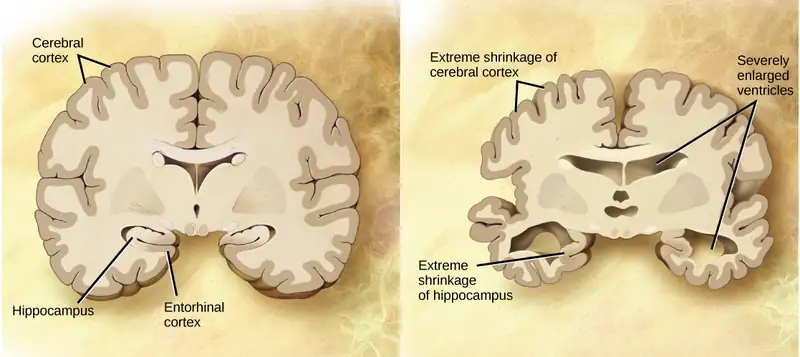
Parkinson’s Disease¶
Like Alzheimer’s disease, Parkinson’s disease is a neurodegenerative disease. It was first characterized by James Parkinson in 1817. Each year, 50,000-60,000 people in the United States are diagnosed with the disease. Parkinson’s disease causes the loss of dopamine neurons in the substantia nigra, a midbrain structure that regulates movement. Loss of these neurons causes many symptoms including tremor (shaking of fingers or a limb), slowed movement, speech changes, balance and posture problems, and rigid muscles. The combination of these symptoms often causes a characteristic slow hunched shuffling walk, illustrated in Figure 35.31. Patients with Parkinson’s disease can also exhibit psychological symptoms, such as dementia or emotional problems.
Although some patients have a form of the disease known to be caused by a single mutation, for most patients the exact causes of Parkinson’s disease remain unknown: the disease likely results from a combination of genetic and environmental factors (similar to Alzheimer’s disease). Post-mortem analysis of brains from Parkinson’s patients shows the presence of Lewy bodies—abnormal protein clumps—in dopaminergic neurons. The prevalence of these Lewy bodies often correlates with the severity of the disease.
There is no cure for Parkinson’s disease, and treatment is focused on easing symptoms. One of the most commonly prescribed drugs for Parkinson’s is L-DOPA, which is a chemical that is converted into dopamine by neurons in the brain. This conversion increases the overall level of dopamine neurotransmission and can help compensate for the loss of dopaminergic neurons in the substantia nigra. Other drugs work by inhibiting the enzyme that breaks down dopamine.
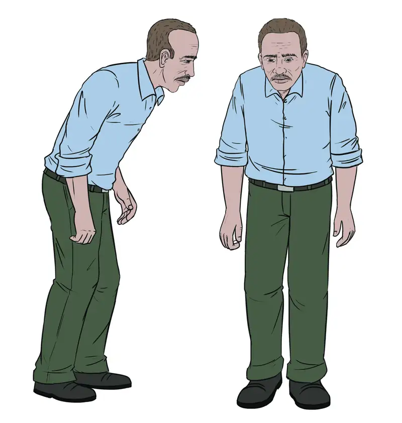
Neurodevelopmental Disorders¶
Neurodevelopmental disorders occur when the development of the nervous system is disturbed. There are several different classes of neurodevelopmental disorders. Some, like Down Syndrome, cause intellectual deficits. Others specifically affect communication, learning, or the motor system. Some disorders like autism spectrum disorder and attention deficit/hyperactivity disorder have complex symptoms.
Autism¶
Autism spectrum disorder (ASD) is a neurodevelopmental disorder. Its severity differs from person to person. Estimates for the prevalence of the disorder have changed rapidly in the past few decades. Current estimates suggest that one in 88 children will develop the disorder. ASD is four times more prevalent in males than females.
Interactive
This video discusses possible reasons why there has been a recent increase in the number of people diagnosed with autism.
A characteristic symptom of ASD is impaired social skills. Children with autism may have difficulty making and maintaining eye contact and reading social cues. They also may have problems feeling empathy for others. Other symptoms of ASD include repetitive motor behaviors (such as rocking back and forth), preoccupation with specific subjects, strict adherence to certain rituals, and unusual language use. Up to 30 percent of patients with ASD develop epilepsy, and patients with some forms of the disorder (like Fragile X) also have intellectual disability. Because it is a spectrum disorder, other ASD patients are very functional and have good-to-excellent language skills. Many of these patients do not feel that they suffer from a disorder and instead think that their brains just process information differently.
Except for some well-characterized, clearly genetic forms of autism (like Fragile X and Rett’s Syndrome), the causes of ASD are largely unknown. Variants of several genes correlate with the presence of ASD, but for any given patient, many different mutations in different genes may be required for the disease to develop. At a general level, ASD is thought to be a disease of “incorrect” wiring. Accordingly, brains of some ASD patients lack the same level of synaptic pruning that occurs in non-affected people. In the 1990s, a research paper linked autism to a common vaccine given to children. This paper was retracted when it was discovered that the author falsified data, and follow-up studies showed no connection between vaccines and autism.
Treatment for autism usually combines behavioral therapies and interventions, along with medications to treat other disorders common to people with autism (depression, anxiety, obsessive compulsive disorder). Although early interventions can help mitigate the effects of the disease, there is currently no cure for ASD.
Attention Deficit Hyperactivity Disorder (ADHD)¶
Approximately three to five percent of children and adults are affected by attention deficit/hyperactivity disorder (ADHD). Like ASD, ADHD is more prevalent in males than females. Symptoms of the disorder include inattention (lack of focus), executive functioning difficulties, impulsivity, and hyperactivity beyond what is characteristic of the normal developmental stage. Some patients do not have the hyperactive component of symptoms and are diagnosed with a subtype of ADHD: attention deficit disorder (ADD). Many people with ADHD also show comorbitity, in that they develop secondary disorders in addition to ADHD. Examples include depression or obsessive compulsive disorder (OCD). Figure 35.32 provides some statistics concerning comorbidity with ADHD.
The cause of ADHD is unknown, although research points to a delay and dysfunction in the development of the prefrontal cortex and disturbances in neurotransmission. According to studies of twins, the disorder has a strong genetic component. There are several candidate genes that may contribute to the disorder, but no definitive links have been discovered. Environmental factors, including exposure to certain pesticides, may also contribute to the development of ADHD in some patients. Treatment for ADHD often involves behavioral therapies and the prescription of stimulant medications, which paradoxically cause a calming effect in these patients.
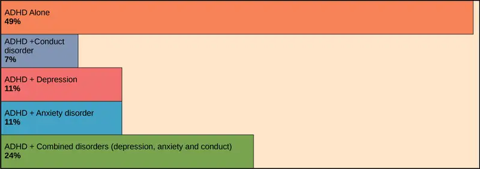
Career Connection: Neurologist
Neurologists are physicians who specialize in disorders of the nervous system. They diagnose and treat disorders such as epilepsy, stroke, dementia, nervous system injuries, Parkinson’s disease, sleep disorders, and multiple sclerosis. Neurologists are medical doctors who have attended college, medical school, and completed three to four years of neurology residency.
When examining a new patient, a neurologist takes a full medical history and performs a complete physical exam. The physical exam contains specific tasks that are used to determine what areas of the brain, spinal cord, or peripheral nervous system may be damaged. For example, to check whether the hypoglossal nerve is functioning correctly, the neurologist will ask the patient to move their tongue in different ways. If the patient does not have full control over tongue movements, then the hypoglossal nerve may be damaged or there may be a lesion in the brainstem where the cell bodies of these neurons reside (or there could be damage to the tongue muscle itself).
Neurologists have other tools besides a physical exam they can use to diagnose particular problems in the nervous system. If the patient has had a seizure, for example, the neurologist can use electroencephalography (EEG), which involves taping electrodes to the scalp to record brain activity, to try to determine which brain regions are involved in the seizure. In suspected stroke patients, a neurologist can use a computerized tomography (CT) scan, which is a type of X-ray, to look for bleeding in the brain or a possible brain tumor. To treat patients with neurological problems, neurologists can prescribe medications or refer the patient to a neurosurgeon for surgery.
Interactive
This website allows you to see the different tests a neurologist might use to see what regions of the nervous system may be damaged in a patient.
Mental Illnesses¶
Mental illnesses are nervous system disorders that result in problems with thinking, mood, or relating with other people. These disorders are severe enough to affect a person’s quality of life and often make it difficult for people to perform the routine tasks of daily living. Debilitating mental disorders affect approximately 12.5 million Americans (about 1 in 17 people) at an annual cost of more than $300 billion. There are several types of mental disorders including schizophrenia, major depression, bipolar disorder, anxiety disorders and phobias, post-traumatic stress disorders, and obsessive-compulsive disorder (OCD), among others. The American Psychiatric Association publishes the Diagnostic and Statistical Manual of Mental Disorders (or DSM), which describes the symptoms required for a patient to be diagnosed with a particular mental disorder. Each newly released version of the DSM contains different symptoms and classifications as scientists learn more about these disorders, their causes, and how they relate to each other. A more detailed discussion of two mental illnesses—schizophrenia and major depression—is given below.
Schizophrenia¶
Schizophrenia is a serious and often debilitating mental illness affecting one percent of people in the United States. Symptoms of the disease include the inability to differentiate between reality and imagination, inappropriate and unregulated emotional responses, difficulty thinking, and problems with social situations. People with schizophrenia can suffer from hallucinations and hear voices; they may also suffer from delusions. Patients also have so-called “negative” symptoms like a flattened emotional state, loss of pleasure, and loss of basic drives. Many schizophrenic patients are diagnosed in their late adolescence or early 20s. The development of schizophrenia is thought to involve malfunctioning dopaminergic neurons and may also involve problems with glutamate signaling. Treatment for the disease usually requires antipsychotic medications that work by blocking dopamine receptors and decreasing dopamine neurotransmission in the brain. This decrease in dopamine can cause Parkinson’s disease-like symptoms in some patients. While some classes of antipsychotics can be quite effective at treating the disease, they are not a cure, and most patients must remain medicated for the rest of their lives.
Depression¶
Major depression affects approximately 6.7 percent of the adults in the United States each year and is one of the most common mental disorders. To be diagnosed with major depressive disorder, a person must have experienced a severely depressed mood lasting longer than two weeks along with other symptoms including a loss of enjoyment in activities that were previously enjoyed, changes in appetite and sleep schedules, difficulty concentrating, feelings of worthlessness, and suicidal thoughts. The exact causes of major depression are unknown and likely include both genetic and environmental risk factors. Some research supports the “classic monoamine hypothesis,” which suggests that depression is caused by a decrease in norepinephrine and serotonin neurotransmission. One argument against this hypothesis is the fact that some antidepressant medications cause an increase in norepinephrine and serotonin release within a few hours of beginning treatment—but clinical results of these medications are not seen until weeks later. This has led to alternative hypotheses: for example, dopamine may also be decreased in depressed patients, or it may actually be an increase in norepinephrine and serotonin that causes the disease, and antidepressants force a feedback loop that decreases this release. Treatments for depression include psychotherapy, electroconvulsive therapy, deep-brain stimulation, and prescription medications. There are several classes of antidepressant medications that work through different mechanisms. For example, monoamine oxidase inhibitors (MAO inhibitors) block the enzyme that degrades many neurotransmitters (including dopamine, serotonin, norepinephrine), resulting in increased neurotransmitter in the synaptic cleft. Selective serotonin reuptake inhibitors (SSRIs) block the reuptake of serotonin into the presynaptic neuron. This blockage results in an increase in serotonin in the synaptic cleft. Other types of drugs such as norepinephrine-dopamine reuptake inhibitors and norepinephrine-serotonin reuptake inhibitors are also used to treat depression.
Other Neurological Disorders¶
There are several other neurological disorders that cannot be easily placed in the above categories. These include chronic pain conditions, cancers of the nervous system, epilepsy disorders, and stroke. Epilepsy and stroke are discussed below.
Epilepsy¶
Estimates suggest that up to three percent of people in the United States will be diagnosed with epilepsy in their lifetime. While there are several different types of epilepsy, all are characterized by recurrent seizures. Epilepsy itself can be a symptom of a brain injury, disease, or other illness. For example, people who have intellectual disability or ASD can experience seizures, presumably because the developmental wiring malfunctions that caused their disorders also put them at risk for epilepsy. For many patients, however, the cause of their epilepsy is never identified and is likely to be a combination of genetic and environmental factors. Often, seizures can be controlled with anticonvulsant medications. However, for very severe cases, patients may undergo brain surgery to remove the brain area where seizures originate.
Stroke¶
A stroke results when blood fails to reach a portion of the brain for a long enough time to cause damage. Without the oxygen supplied by blood flow, neurons in this brain region die. This neuronal death can cause many different symptoms—depending on the brain area affected—including headache, muscle weakness or paralysis, speech disturbances, sensory problems, memory loss, and confusion. Stroke is often caused by blood clots and can also be caused by the bursting of a weak blood vessel. Strokes are extremely common and are the third most common cause of death in the United States. On average one person experiences a stroke every 40 seconds in the United States. Approximately 75 percent of strokes occur in people older than 65. Risk factors for stroke include high blood pressure, diabetes, high cholesterol, and a family history of stroke. Smoking doubles the risk of stroke. Because a stroke is a medical emergency, patients with symptoms of a stroke should immediately go to the emergency room, where they can receive drugs that will dissolve any clot that may have formed. These drugs will not work if the stroke was caused by a burst blood vessel or if the stroke occurred more than three hours before arriving at the hospital. Treatment following a stroke can include blood pressure medication (to prevent future strokes) and (sometimes intense) physical therapy.
Chapter Review¶
Key Terms¶
- acetylcholine
- neurotransmitter released by neurons in the central nervous system and peripheral nervous system
- action potential
- self-propagating momentary change in the electrical potential of a neuron (or muscle) membrane
- Alzheimer’s disease
- neurodegenerative disorder characterized by problems with memory and thinking
- amygdala
- structure within the limbic system that processes fear
- arachnoid mater
- spiderweb-like middle layer of the meninges that cover the central nervous system
- astrocyte
- glial cell in the central nervous system that provide nutrients, extracellular buffering, and structural support for neurons; also makes up the blood-brain barrier
- attention deficit hyperactivity disorder (ADHD)
- neurodevelopmental disorder characterized by difficulty maintaining attention and controlling impulses
- autism spectrum disorder (ASD)
- neurodevelopmental disorder characterized by impaired social interaction and communication abilities
- autonomic nervous system
- part of the peripheral nervous system that controls bodily functions
- axon
- tube-like structure that propagates a signal from a neuron’s cell body to axon terminals
- axon hillock
- electrically sensitive structure on the cell body of a neuron that integrates signals from multiple neuronal connections
- axon terminal
- structure on the end of an axon that can form a synapse with another neuron
- basal ganglia
- interconnected collections of cells in the brain that are involved in movement and motivation; also known as basal nuclei
- basal nuclei
- see basal ganglia
- brainstem
- portion of the brain that connects with the spinal cord; controls basic nervous system functions like breathing, heart rate, and swallowing
- cerebellum
- brain structure involved in posture, motor coordination, and learning new motor actions
- cerebral cortex
- outermost sheet of brain tissue; involved in many higher-order functions
- cerebrospinal fluid (CSF)
- clear liquid that surrounds the brain and spinal cord and fills the ventricles and central canal; acts as a shock absorber and circulates material throughout the brain and spinal cord
- choroid plexus
- spongy tissue within ventricles that produces cerebrospinal fluid
- cingulate gyrus
- helps regulate emotions and pain; thought to directly drive the body’s conscious response to unpleasant experiences
- corpus callosum
- thick fiber bundle that connects the cerebral hemispheres
- cranial nerve
- sensory and/or motor nerve that emanates from the brain
- dendrite
- structure that extends away from the cell body to receive messages from other neurons
- depolarization
- change in the membrane potential to a less negative value
- dura mater
- tough outermost layer that covers the central nervous system
- ependymal
- cell that lines fluid-filled ventricles of the brain and the central canal of the spinal cord; involved in production of cerebrospinal fluid
- epilepsy
- neurological disorder characterized by recurrent seizures
- excitatory postsynaptic potential (EPSP)
- depolarization of a postsynaptic membrane caused by neurotransmitter molecules released from a presynaptic cell
- frontal lobe
- part of the cerebral cortex that contains the motor cortex and areas involved in planning, attention, and language
- glia
- (also, glial cells) cells that provide support functions for neurons
- gyrus
- (plural: gyri) ridged protrusions in the cortex
- hippocampus
- brain structure in the temporal lobe involved in processing memories
- hyperpolarization
- change in the membrane potential to a more negative value
- hypothalamus
- brain structure that controls hormone release and body homeostasis
- inhibitory postsynaptic potential (IPSP)
- hyperpolarization of a postsynaptic membrane caused by neurotransmitter molecules released from a presynaptic cell
- limbic system
- connected brain areas that process emotion and motivation
- long-term depression (LTD)
- prolonged decrease in synaptic coupling between a pre- and postsynaptic cell
- long-term potentiation (LTP)
- prolonged increase in synaptic coupling between a pre-and postsynaptic cell
- major depression
- mental illness characterized by prolonged periods of sadness
- membrane potential
- difference in electrical potential between the inside and outside of a cell
- meninge
- membrane that covers and protects the central nervous system
- microglia
- glia that scavenge and degrade dead cells and protect the brain from invading microorganisms
- myelin
- fatty substance produced by glia that insulates axons
- neurodegenerative disorder
- nervous system disorder characterized by the progressive loss of neurological functioning, usually caused by neuron death
- neuron
- specialized cell that can receive and transmit electrical and chemical signals
- nodes of Ranvier
- gaps in the myelin sheath where the signal is recharged
- norepinephrine
- neurotransmitter and hormone released by activation of the sympathetic nervous system
- occipital lobe
- part of the cerebral cortex that contains visual cortex and processes visual stimuli
- oligodendrocyte
- glial cell that myelinates central nervous system neuron axons
- parasympathetic nervous system
- division of autonomic nervous system that regulates visceral functions during rest and digestion
- parietal lobe
- part of the cerebral cortex involved in processing touch and the sense of the body in space
- Parkinson’s disease
- neurodegenerative disorder that affects the control of movement
- pia mater
- thin membrane layer directly covering the brain and spinal cord
- proprioception
- sense about how parts of the body are oriented in space
- radial glia
- glia that serve as scaffolds for developing neurons as they migrate to their final destinations
- refractory period
- period after an action potential when it is more difficult or impossible for an action potential to be fired; caused by inactivation of sodium channels and activation of additional potassium channels of the membrane
- saltatory conduction
- “jumping” of an action potential along an axon from one node of Ranvier to the next
- satellite glia
- glial cell that provides nutrients and structural support for neurons in the peripheral nervous system
- schizophrenia
- mental disorder characterized by the inability to accurately perceive reality; patients often have difficulty thinking clearly and can suffer from delusions
- Schwann cell
- glial cell that creates myelin sheath around a peripheral nervous system neuron axon
- sensory-somatic nervous system
- system of sensory and motor nerves
- somatosensation
- sense of touch
- spinal cord
- thick fiber bundle that connects the brain with peripheral nerves; transmits sensory and motor information; contains neurons that control motor reflexes
- spinal nerve
- nerve projecting between skin or muscle and spinal cord
- sulcus
- (plural: sulci) indents or “valleys” in the cortex
- summation
- process of multiple presynaptic inputs creating EPSPs around the same time for the postsynaptic neuron to be sufficiently depolarized to fire an action potential
- sympathetic nervous system
- division of autonomic nervous system activated during stressful “fight or flight” situations
- synapse
- junction between two neurons where neuronal signals are communicated
- synaptic cleft
- space between the presynaptic and postsynaptic membranes
- synaptic vesicle
- spherical structure that contains a neurotransmitter
- temporal lobe
- part of the cerebral cortex that processes auditory input; parts of the temporal lobe are involved in speech, memory, and emotion processing
- thalamus
- brain area that relays sensory information to the cortex
- threshold of excitation
- level of depolarization needed for an action potential to fire
- ventricle
- cavity within brain that contains cerebrospinal fluid
Summary¶
35.1 Neurons and Glial Cells¶
The nervous system is made up of neurons and glia. Neurons are specialized cells that are capable of sending electrical as well as chemical signals. Most neurons contain dendrites, which receive these signals, and axons that send signals to other neurons or tissues. There are four main types of neurons: unipolar, bipolar, multipolar, and pseudounipolar neurons. Glia are non-neuronal cells in the nervous system that support neuronal development and signaling. There are several types of glia that serve different functions.
35.2 How Neurons Communicate¶
Neurons have charged membranes because there are different concentrations of ions inside and outside of the cell. Voltage-gated ion channels control the movement of ions into and out of a neuron. When a neuronal membrane is depolarized to at least the threshold of excitation, an action potential is fired. The action potential is then propagated along a myelinated axon to the axon terminals. In a chemical synapse, the action potential causes release of neurotransmitter molecules into the synaptic cleft. Through binding to postsynaptic receptors, the neurotransmitter can cause excitatory or inhibitory postsynaptic potentials by depolarizing or hyperpolarizing, respectively, the postsynaptic membrane. In electrical synapses, the action potential is directly communicated to the postsynaptic cell through gap junctions—large channel proteins that connect the pre-and postsynaptic membranes. Synapses are not static structures and can be strengthened and weakened. Two mechanisms of synaptic plasticity are long-term potentiation and long-term depression.
35.3 The Central Nervous System¶
The vertebrate central nervous system contains the brain and the spinal cord, which are covered and protected by three meninges. The brain contains structurally and functionally defined regions. In mammals, these include the cortex (which can be broken down into four primary functional lobes: frontal, temporal, occipital, and parietal), basal ganglia, thalamus, hypothalamus, limbic system, cerebellum, and brainstem—although structures in some of these designations overlap. While functions may be primarily localized to one structure in the brain, most complex functions, like language and sleep, involve neurons in multiple brain regions. The spinal cord is the information superhighway that connects the brain with the rest of the body through its connections with peripheral nerves. It transmits sensory and motor input and also controls motor reflexes.
35.4 The Peripheral Nervous System¶
The peripheral nervous system contains both the autonomic and sensory-somatic nervous systems. The autonomic nervous system provides unconscious control over visceral functions and has two divisions: the sympathetic and parasympathetic nervous systems. The sympathetic nervous system is activated in stressful situations to prepare the animal for a “fight or flight” response. The parasympathetic nervous system is active during restful periods. The sensory-somatic nervous system is made of cranial and spinal nerves that transmit sensory information from skin and muscle to the CNS and motor commands from the CNS to the muscles.
35.5 Nervous System Disorders¶
Some general themes emerge from the sampling of nervous system disorders presented above. The causes for most disorders are not fully understood—at least not for all patients—and likely involve a combination of nature (genetic mutations that become risk factors) and nurture (emotional trauma, stress, hazardous chemical exposure). Because the causes have yet to be fully determined, treatment options are often lacking and only address symptoms.
Visual Connection Questions¶
35.1 Neurons and Glial Cells¶
1. Figure 35.3 Which of the following statements is false?
- The soma is the cell body of a nerve cell.
- Myelin sheath provides an insulating layer to the dendrites.
- Axons carry the signal from the soma to the target.
- Dendrites carry the signal to the soma.
Answer
35.2 How Neurons Communicate¶
2. Figure 35.11 Potassium channel blockers, such as amiodarone and procainamide, which are used to treat abnormal electrical activity in the heart, called cardiac dysrhythmia, impede the movement of K+ through voltage-gated K+ channels. Which part of the action potential would you expect potassium channels to affect?
Answer
Figure 35.11 Potassium channel blockers slow the repolarization phase, but have no effect on depolarization.
35.4 The Peripheral Nervous System¶
3. Figure 35.26 Which of the following statements is false?
- The parasympathetic pathway is responsible for relaxing the body, while the sympathetic pathway is responsible for preparing for an emergency.
- Most preganglionic neurons in the sympathetic pathway originate in the spinal cord.
- Slowing of the heartbeat is a parasympathetic response.
- Parasympathetic neurons are responsible for releasing norepinephrine on the target organ, while sympathetic neurons are responsible for releasing acetylcholine.
Answer
Review Questions¶
35.1 Neurons and Glial Cells¶
4. Neurons contain ________, which can receive signals from other neurons.
- axons
- mitochondria
- dendrites
- Golgi bodies
Answer
C
5. A(n) ________ neuron has one axon and one dendrite extending directly from the cell body.
- unipolar
- bipolar
- multipolar
- pseudounipolar
Answer
B
6. Glia that provide myelin for neurons in the brain are called ________.
- Schwann cells
- oligodendrocytes
- microglia
- astrocytes
Answer
B
7. Meningitis is a viral or bacterial infection of the brain. Which cell type is the first to have its function disrupted during meningitis?
- astrocytes
- microglia
- neurons
- satellite glia
Answer
A
35.2 How Neurons Communicate¶
8. For a neuron to fire an action potential, its membrane must reach ________.
- hyperpolarization
- the threshold of excitation
- the refractory period
- inhibitory postsynaptic potential
Answer
B
9. After an action potential, the opening of additional voltage-gated ________ channels and the inactivation of sodium channels, cause the membrane to return to its resting membrane potential.
- sodium
- potassium
- calcium
- chloride
Answer
B
10. What is the term for protein channels that connect two neurons at an electrical synapse?
- synaptic vesicles
- voltage-gated ion channels
- gap junction protein
- sodium-potassium exchange pumps
Answer
C
11. Which of the following molecules is not involved in the maintenance of the resting membrane potential?
- potassium cations
- ATP
- voltage-gated ion channels
- calcium cations
Answer
D
35.3 The Central Nervous System¶
12. The ________ lobe contains the visual cortex.
- frontal
- parietal
- temporal
- occipital
Answer
D
13. The ________ connects the two cerebral hemispheres.
- limbic system
- corpus callosum
- cerebellum
- pituitary
Answer
B
14. Neurons in the ________ control motor reflexes.
- thalamus
- spinal cord
- parietal lobe
- hippocampus
Answer
B
15. Phineas Gage was a 19th century railroad worker who survived an accident that drove a large iron rod through his head. If the injury resulted in him becoming temperamental and capricious what part of his brain was damaged?
- frontal lobe
- hippocampus
- parietal lobe
- temporal lobe
Answer
A
35.4 The Peripheral Nervous System¶
16. Activation of the sympathetic nervous system causes:
- increased blood flow into the skin
- a decreased heart rate
- an increased heart rate
- increased digestion
Answer
C
17. Where are parasympathetic preganglionic cell bodies located?
- cerebellum
- brainstem
- dorsal root ganglia
- skin
Answer
B
18. ________ is released by motor nerve endings onto muscle.
- Acetylcholine
- Norepinephrine
- Dopamine
- Serotonin
Answer
A
35.5 Nervous System Disorders¶
19. Parkinson’s disease is a caused by the degeneration of neurons that release ________.
- serotonin
- dopamine
- glutamate
- norepinephrine
Answer
B
20. ________ medications are often used to treat patients with ADHD.
- Tranquilizer
- Antibiotic
- Stimulant
- Anti-seizure
Answer
C
21. Strokes are often caused by ________.
- neurodegeneration
- blood clots or burst blood vessels
- seizures
- viruses
Answer
B
22. Why is it difficult to identify the cause of many nervous system disorders?
- The genes associated with the diseases are not known.
- There are no obvious defects in brain structure.
- The onset and display of symptoms varies between patients.
- all of the above
Answer
D
23. Why do many patients with neurodevelopmental disorders develop secondary disorders?
- Their genes predispose them to schizophrenia.
- Stimulant medications cause new behavioral disorders.
- Behavioral therapies only improve neurodevelopmental disorders.
- Dysfunction in the brain can affect many aspects of the body.
Answer
D
Critical Thinking Questions¶
35.1 Neurons and Glial Cells¶
24. How are neurons similar to other cells? How are they unique?
Answer
Neurons contain organelles common to all cells, such as a nucleus and mitochondria. They are unique because they contain dendrites, which can receive signals from other neurons, and axons that can send these signals to other cells.
25. Multiple sclerosis causes demyelination of axons in the brain and spinal cord. Why is this problematic?
Answer
Myelin provides insulation for signals traveling along axons. Without myelin, signal transmission can slow down and degrade over time. This would slow down neuronal communication across the nervous system and affect all downstream functions.
26. Many neurons have only a single axon, but many terminals at the end of the axon. How does this end structure of the axon support its function?
Answer
A single axon means that a neuron can only send one signal at a time (one electrical impulse down the length of the axon). However, since the axon has multiple terminals it can send the signal to several other cells at once. This ensures that the signal is rapidly propagated to the rest of the body.
35.2 How Neurons Communicate¶
27. How does myelin aid propagation of an action potential along an axon? How do the nodes of Ranvier help this process?
Answer
Myelin prevents the leak of current from the axon. Nodes of Ranvier allow the action potential to be regenerated at specific points along the axon. They also save energy for the cell since voltage-gated ion channels and sodium-potassium transporters are not needed along myelinated portions of the axon.
28. What are the main steps in chemical neurotransmission?
Answer
An action potential travels along an axon until it depolarizes the membrane at an axon terminal. Depolarization of the membrane causes voltage-gated Ca2+ channels to open and Ca2+ to enter the cell. The intracellular calcium influx causes synaptic vesicles containing neurotransmitter to fuse with the presynaptic membrane. The neurotransmitter diffuses across the synaptic cleft and binds to receptors on the postsynaptic membrane. Depending on the specific neurotransmitter and postsynaptic receptor, this action can cause positive (excitatory postsynaptic potential) or negative (inhibitory postsynaptic potential) ions to enter the cell.
29. Describe how long-term potentiation can lead to a nicotine addiction.
Answer
Long-term potentiation describes the process whereby exposure to a stimulus increases the likelihood that a neuron will depolarize in response to that stimulus in the future. Nicotine exposure causes long-term potentiation of neurons in the amygdala, and activates reward centers of the brain. As nicotine exposure continues, long-term potentiation reinforces the activation of the reward pathways in response to nicotine consumption.
35.3 The Central Nervous System¶
30. What methods can be used to determine the function of a particular brain region?
Answer
To determine the function of a specific brain area, scientists can look at patients who have damage in that brain area and see what symptoms they exhibit. Researchers can disable the brain structure temporarily using transcranial magnetic stimulation. They can disable or remove the area in an animal model. fMRI can be used to correlate specific functions with increased blood flow to brain regions.
31. What are the main functions of the spinal cord?
Answer
The spinal cord transmits sensory information from the body to the brain and motor commands from the brain to the body through its connections with peripheral nerves. It also controls motor reflexes.
32. Alzheimer’s disease involves three of the four lobes of the brain. Identify one of the involved lobes and describe the lobe’s symptoms associated with the disease.
Answer
Potential answers:
- Frontal lobe. Alzheimer’s patients experience changes in personality, judgment, and behavior.;
- Parietal lobe. Alzheimer’s patients experience difficulties with recalling and using language as disease progresses.;
- Temporal lobe. The hippocampus is one of the main areas of the brain affected in Alzheimer’s disease. Patients lose the ability to make new memories and access memories.
35.4 The Peripheral Nervous System¶
33. What are the main differences between the sympathetic and parasympathetic branches of the autonomic nervous system?
Answer
The sympathetic nervous system prepares the body for “fight or flight,” whereas the parasympathetic nervous system allows the body to “rest and digest.” Sympathetic neurons release norepinephrine onto target organs; parasympathetic neurons release acetylcholine. Sympathetic neuron cell bodies are located in sympathetic ganglia. Parasympathetic neuron cell bodies are located in the brainstem and sacral spinal cord. Activation of the sympathetic nervous system increases heart rate and blood pressure and decreases digestion and blood flow to the skin. Activation of the parasympathetic nervous system decreases heart rate and blood pressure and increases digestion and blood flow to the skin.
34. What are the main functions of the sensory-somatic nervous system?
Answer
The sensory-somatic nervous system transmits sensory information from the skin, muscles, and sensory organs to the CNS. It also sends motor commands from the CNS to the muscles, causing them to contract.
35. Describe how the sensory-somatic nervous system reacts by reflex to a person touching something hot. How does this allow for rapid responses in potentially dangerous situations?
Answer
A person’s skin comes into contact with a hot object, and the high temperature is recognized by the thermoreceptors of a sensory neuron. The signal is relayed to the spinal cord, and sent to a motor neuron. The motor neuron relays the signal to its axon, and produces acetylcholine to contract the muscle that will pull the person away from the hot object. By connecting the sensory and motor neurons in the spinal cord (instead of integrating the signal in the brain) the body can respond faster.
36. Scientists have suggested that the autonomic nervous system is not well-adapted to modern human life. How is the sympathetic nervous system an ineffective response to the everyday challenges faced by modern humans?
Answer
Many events in modern human life are not physical dangers; instead they are events we think of as “stress.” Finding the money to pay your student loans or being nervous before a test still activate the sympathetic nervous system, but these situations do not require the fight-or-flight response to survive.
35.5 Nervous System Disorders¶
37. What are the main symptoms of Alzheimer’s disease?
Answer
Symptoms of Alzheimer’s disease include disruptive memory loss, confusion about time or place, difficulties planning or executing tasks, poor judgment, and personality changes.
38. What are possible treatments for patients with major depression?
Answer
Possible treatments for patients with major depression include psychotherapy and prescription medications. MAO inhibitor drugs inhibit the breakdown of certain neurotransmitters (including dopamine, serotonin, norepinephrine) in the synaptic cleft. SSRI medications inhibit the reuptake of serotonin into the presynaptic neuron.
Adapted from Biology 2e by OpenStax, licensed under CC BY 4.0. Access the original for free at openstax.org. Changes: converted to the web reading format of The Open Book Project.